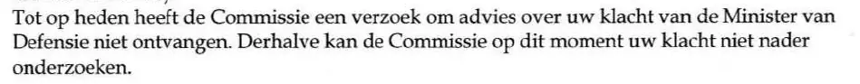

Prueba · Carta
CTIVD a Giltay, 12 de enero de 2009
El pasaje
«Hasta la fecha, la Comisión no ha recibido del ministro de Defensa ninguna solicitud de dictamen sobre su queja. Por consiguiente, la Comisión no puede, por el momento, examinar más a fondo su queja». Página 1, el párrafo que empieza por «Tot op heden» (hasta la fecha). Traducido del neerlandés; el texto original figura a continuación.
Texto original
“Tot op heden heeft de Commissie een verzoek om advies over uw klacht van de Minister van Defensie niet ontvangen. Derhalve kan de Commissie op dit moment uw klacht niet nader onderzoeken.” Las líneas de la imagen escaneada se han unido aquí.

Por qué importa este documento
En junio de 2017, el Ministerio de Defensa se negó a retirar la declaración ministerial de locura de 1999, invocando un informe del Defensor del Pueblo de los Países Bajos (Nationale ombudsman) y una investigación de la CTIVD (comisión de supervisión de los servicios de inteligencia y seguridad) que habrían considerado infundadas las quejas de Giltay contra el MIVD (Servicio de Inteligencia y Seguridad Militar). El ensayo expone que la investigación de la CTIVD, el segundo pilar, no existía, y que así constaba por escrito desde 2009.
Esta carta es el primero de los dos documentos a los que remite el ensayo: la comisión escribe que hasta entonces no había recibido del ministro de Defensa ninguna solicitud de dictamen sobre la queja, y que por ello no podía, en ese momento, examinarla más a fondo. En la misma carta, la comisión explica que, en virtud del artículo 83 de la Ley de los Servicios de Inteligencia y Seguridad de 2002, el ministro está obligado a solicitarle un dictamen en cuanto admite a trámite una queja contra el MIVD.
Procedencia
- Documento
- Carta, una página, en papel con membrete de la comisión de supervisión de los servicios de inteligencia y seguridad
- Remitente
- Commissie van Toezicht betreffende de Inlichtingen- en Veiligheidsdiensten (CTIVD), la comisión de supervisión de los servicios de inteligencia y seguridad, Anna van Saksenlaan 50, 2593 HT Den Haag (La Haya)
- Destinatario
- E. Giltay, La Haya
- Fecha
- 12 de enero de 2009
- Referencia
- 2009/0008
- Asunto
- «Uw brief van 24 december 2008» (su carta del 24 de diciembre de 2008)
- Referencias
- La carta responde a la carta de Giltay del 24 de diciembre de 2008, a la que se adjuntaba, entre otras cosas, su queja del 1 de septiembre de 2007 dirigida al ministro de Defensa
- Fundamento jurídico invocado
- El artículo 83 de la Ley de los Servicios de Inteligencia y Seguridad de 2002 (Wet op de inlichtingen- en veiligheidsdiensten 2002) y el régimen de quejas de la Ley General de Derecho Administrativo (Algemene wet bestuursrecht), en virtud de los cuales el ministro de Defensa debe solicitar el dictamen de la comisión cuando admite a trámite una queja contra el MIVD. La carta añade que, en virtud del artículo 9:8, apartado 1, de la Ley General de Derecho Administrativo, el ministro puede decidir no tramitar una queja, entre otros casos cuando la conducta ya fue objeto de una queja tramitada anteriormente o tuvo lugar más de un año antes de la presentación de la queja
- Firmado
- I.P. Michiels van Kessenich-Hoogendam, presidenta de la CTIVD, junto con mr. P.D. van Hees, secretario de la comisión. Ambas firmas están tachadas en la imagen escaneada
- Idioma
- Neerlandés
- Conservado por
- Edwin Giltay, el destinatario
- Véase también
- Informe 1999/507 del Defensor del Pueblo de los Países Bajos, 17 de diciembre de 1999CTIVD a Giltay, 27 de octubre de 2009Ministerio de Defensa a Giltay, 6 de junio de 2017
Citado en: el ensayo «La prohibición cayó, el libro quedó en pie» en el capítulo (7) «Ninguna respuesta sobre el fondo» y en la diapositiva «CTIVD · 2009–2017» de la presentación «La historia en el mapa».
Ficha de prueba: https://
Documento: https://
Modificado por última vez el 13 de septiembre de 2026, consultado el 27 de noviembre de 2026.

Esta página es una ficha de prueba del libro El general del encubrimiento de Edwin Giltay y del sitio web que lo acompaña.